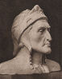

| SU VIDA | |||
|
|||
| SU OBRA | |||
|
 |
Dante Alighieri de Luca Signorelli (1499-1502) |
|
Presentación del Círculo de los Amigos de Dante El Círculo de los Amigos de Dante es una asociación cultural con base en Granada, en España, que reúne a aquellas y aquellos que se interesan por la Italia de ayer y de hoy bajo sus aspectos históricos, artísticos y literarios. Las actividades de la asociación son numerosas y variadas; le proponemos, entre otras:
Si guarda un buen recuerdo de un viaje a Italia, si quiere reencontrar sus raíces, o simplemente si le gusta Italia, es bienvenido al Círculo de los Amigos de Dante. Fabio Sanz Urquijo, Presidente del Círculo de los Amigos de Dante |
|  | Dante Alighieri Poeta y humanista italiano, Dante Alighieri tomó parte activa en la vida política de su ciudad natal, Florencia, y dio a la poesía de la Edad Media italiana sus páginas más vibrantes, cuestionándose incesantemente sobre el recuerdo de su encuentro fulminante con Beatriz Portinari, desaparecida brutalmente, y cuya imagen él no cesará de evocar y transponer, en el mundo terrenal con la Vida Nueva, y en el más allá con la inmortal Divina Comedia. |
Sobre la web www.losamigosdedante.org Esta web está optimizada para Internet Explorer con una resolución mínima de 1024x768. Puede escribir al webmaster en esta dirección: webmaster@losamigosdedante.org |
En el márgen, representación de Dante y Beatriz por Botticelli